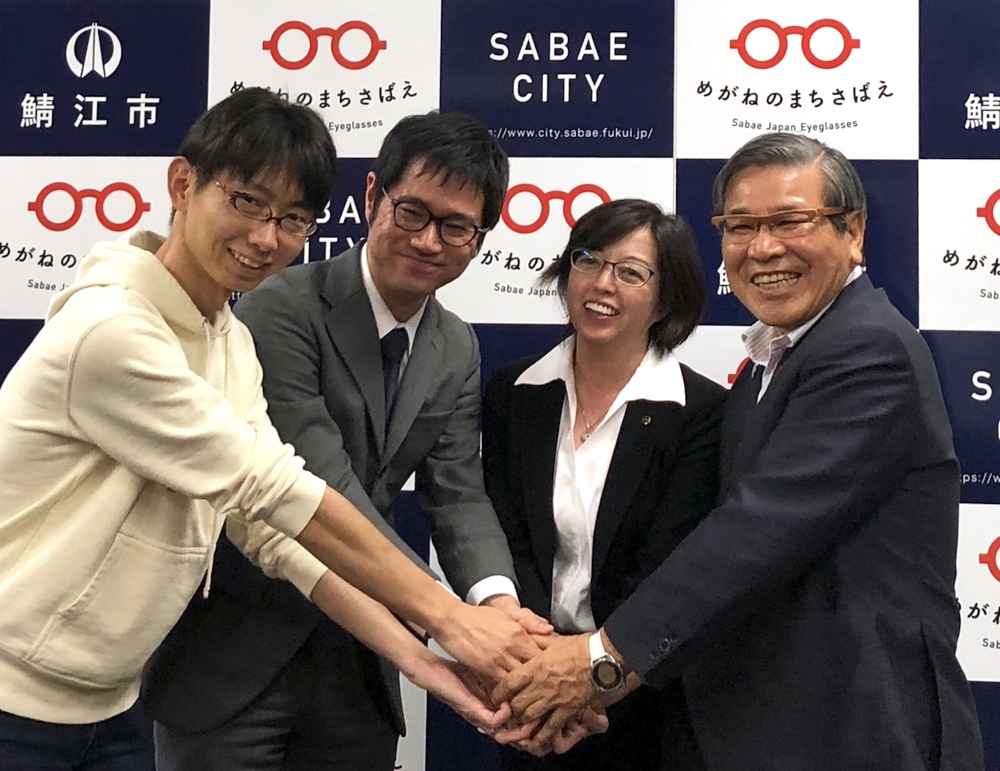
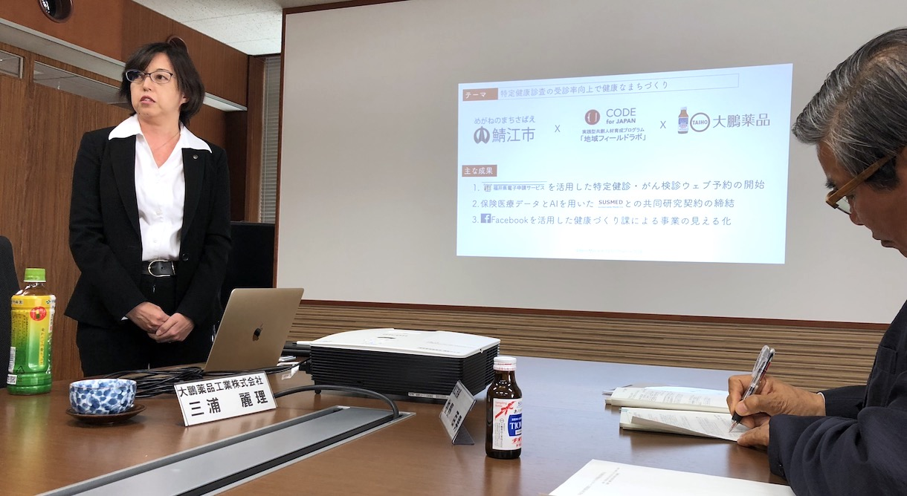
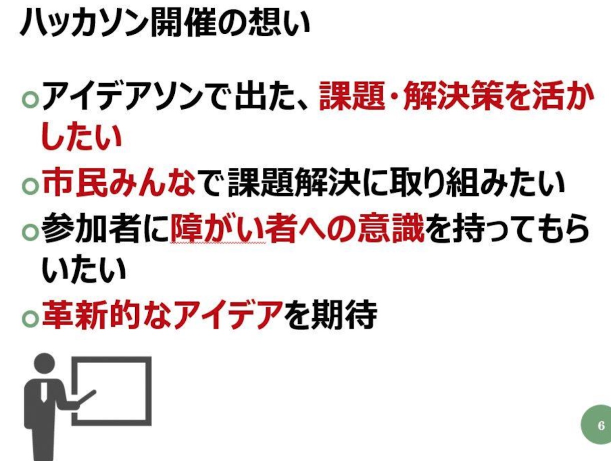
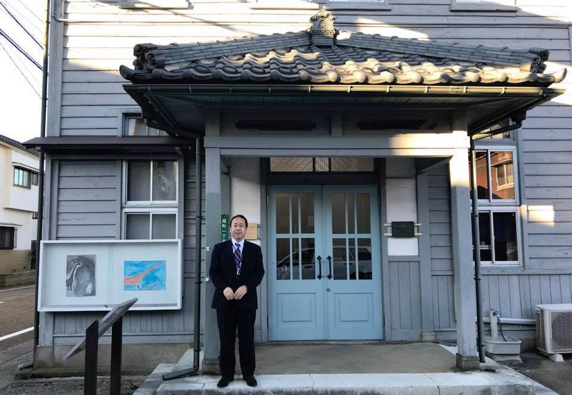
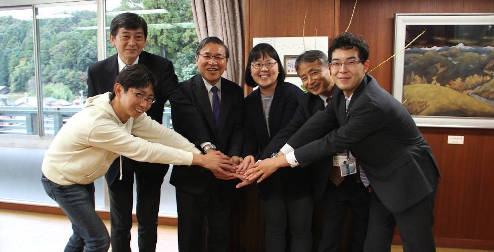
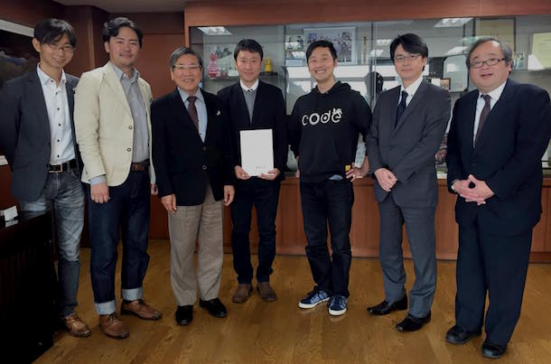
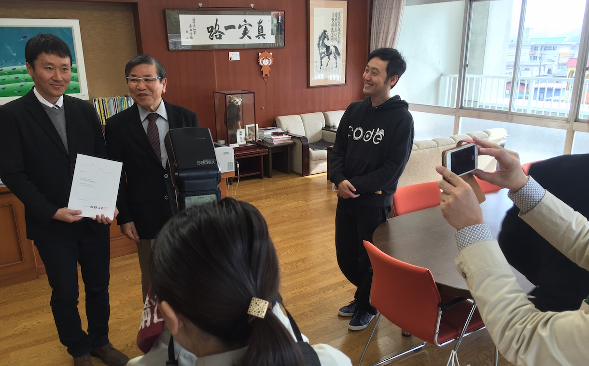
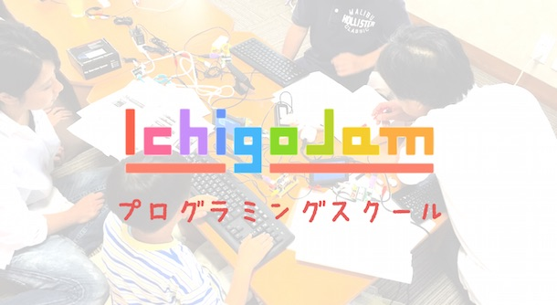
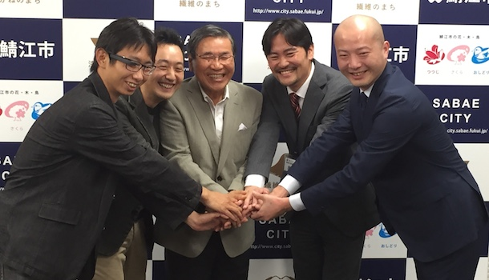
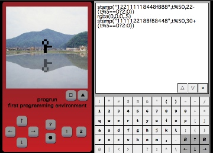

Code for Sabae - 鯖江のために創る部
第五期地域フィールドラボ in 鯖江「受診率向上で健康なまちづくり」
2018.10.16開催、地域フィールドラボ（旧名コーポレートフェローシップ）の事業報告会がありました。
主な成果
・特定健診・がん検診のウェブ予約の開始
・保険医療データとAIを用いたサスメド社との共同研究契約の締結
・Facebookを活用した健康づくり課による事業の見える化
「大鵬薬品 x 鯖江市、第5期 Code for Japan 地域フィールドラボ事業報告会 - 現場での恊働とデータが生むイノベーション #sabae #codefor / 福野泰介の一日一創 / Create every day by Taisuke Fukuno」
「「コード・フォー・ジャパン」地域フィールドラボ事業成果報告会 | 『さばえ.jp』百さんのブログです」
障がい者に寄り添うオープンデータ活用・ハッカソン
2017.1.14(日)開催、コーポレートフェローシップで来鯖中の富士通、三ツ山さんと共同企画のハッカソン開催！
第四期コーポレートフェローシップ in 鯖江 に協力します
2017.11〜2018.1、第4期の鯖江市Code for Japan コーポレートフェローシップ。
コーポレートフェローとして臨時鯖江市職員となった、三ツ山さん（富士通） Hana道場
photo CC BY fukuno.jig.jp
「富士通 x 鯖江市 x Code for Japan！ 障害者をテーマにスタート「第4期コーポレートフェローシップ in 鯖江」とPython3で市役所スクレイピング」
第三期コーポレートフェローシップ in 鯖江 に協力します
2016.11〜2017.1、第3期の鯖江市Code for Japan コーポレートフェローシップ。
Yahoo!Japanより廣瀬さんと葛城さん
photo CC BY fukuno.jig.jp
「Yahoo!Japanより鯖江に2名！公共交通をテーマに鯖江コーポレートフェローシップ第三期スタート」
第二期コーポレートフェローシップ in 鯖江 に協力します
2015年12月から翌年2月までの3ヶ月間、NECソリューションイノベータの石崎さんをCode for Japan コーポレートフェローシップとして鯖江市役所での受け入れ事業がスタートしました。Code for Sabae は地元コードフォーとしてバックアップし任務遂行のサポートをします！
photo CC BY fukuno.jig.jp

photo CC BY fukuno.jig.jp
IchigoJamプログラミングスクール開講！
スイミングスクールのように誰もが気軽にプログラミングを学べるプログラミングスクールが開校です！インターネットやパソコンを理解する近道は、それを形作るソフトウェアの原理、プログラミングを学ぶこと。
講師は、元福井高専電子情報工学科教授/PCNの蘆田昇氏。
福井高専でプログラミングを30年以上教えていた大ベテラン。
教材は、福井県鯖江市生まれのプログラミング学習用コンピューター、IchigoJam。
初心者用プログラミング言語として定評あるBASICを使っているので、こどもでもシニアの方でもだれでも簡単にプログラミングを学べます。
IchigoJamで学んだ子どもたちは、稲田朋美政調会長に自作のゲームを披露したり、 iPhoneアプリの開発言語Swiftを自分で学び、大人向けのハッカソンでも審査員特別賞獲得など、大活躍！
毎週火曜日、一部 17:00〜17:50
受講料：子供 1,000円/回（税込） シニア・一般 2,000円/回（税込）

「IchigoJamプログラミングスクール」
主催：PCN / Code for Sabae
講師：蘆田昇 (元福井高専教授)
会場：Hana道場
申込：不要（直接会場までお越しください）
運営：NPO法人エル・コミュニティ
孫に子供に、プログラミングするきっかけを！
「三方良し！こどもプログラミング環境 with シニア」
「ビッグデータ＆オープンデータ研究会 in 九州」講演記念、AEDナビ（福岡市）

「AEDナビ（福岡市）」
福岡市オープンデータのAEDオープンデータを使って、AEDナビを移植しました。５つ星オープンデータで、全世界で使えるようにしたい！
鯖江シニアITアプリ講座、シニアによる IchigoJam BASIC シビックハッカソン

鯖江市役所、ict4e、jig.jp、Code for Sabae による共同事業。シニアITアプリ講座、IchigoJamを使ったプログラミング教室、第二回目は日常の不満をベースにオリジナルアプリづくりを行いました。個性的な９作のプロトタイプの発表会を開催しました。詳細はこちら (2014.10.20)
教材：IchigoJamプログラミングはじめ その１、その２、その３
コーポレートフェローシップスタート
企業研修x市役所、問題解決力を鍛える地方自治体留学のススメ、世界初コーポレート・フェローシップ(Code for) SAPジャパンx鯖江市トライアルスタート
2014.10.16〜11.30 SAPジャパン社員 奥野さん、鯖江市の職員として常勤！
ヒストリー
- 2013.5.10 １秒でできるオープンデータ、福井県オープンデータキックオフ！ - Code for Sabae スタート!
- 2013.5.16 自分たちのまちは自分たちで創る - Code for X のススメ
- 2013.8.1 世界中から集まった Code for Sabae ロゴ案56コ by designclue
- 2013.9.30 シニアによる Code for Sabae! シニアプログラミング教室 - 開催発表
- 2013.10.2 シビックプログラマー、期待の市民開発者 / Open Data for Future 感想
- 2013.10.12 創ろう！オープンデータで便利な生活 - 福井県オープンデータ開始ニュース
- 2013.10.17 ITS世界会議、オープンデータでつながる新しい交通と生活
- 2013.10.31 WIRED CONFERENCE オープンガバメントで創ろう豊かな社会
- 2013.11.6 まずは使ってみる！行政職員向けオープンデータ・SNS勉強会
- 2013.11.25 みんなで創る社会、オープンデータのススメ スライド公開！
- 2013.12.8 地味ゲー好きな小学生という光 - Code for Sabae ご縁市プログラミング体験 / 告知
- 2013.12.12 なぜ今デザイナーにプログラミングなのか？ P4D in FUKUI 開催レポート / CSEDWEEK告知
- 2013.12.24 シビックソウルに火をつけよう！社会作りを市民の手に取り戻す - Civic Tech Advent Calendar 2013
- 2014.1.14 まずは自分のために！ Code for myself のススメ - 舞鶴高専にて講演
- 2014.2.14 もしエンジニアがまちづくりをしたら？Codeがつなぐ地域と地域 - デブサミ2014
- 2014.2.18 「学生とオープンデータ」共通の魅力、多摩市議来鯖「らてんぽ」にて
- 2014.2.24 鯖江市、全国自治体初のW3C加盟発表！
- 2014.3.14 高専エンジニアがつなぐ横と縦、Code for KOSEN ４つの実績
- 2014.3.17 「ともに考え、ともにつくる」ICTでつながる人 - 読売ICTフォーラム2014
- 2014.4.26 データシティ鯖江で開催、電脳メガネARアプリコンテスト公開審査会・表彰式レポート
- 2014.6.10 The world as one island 地球というひとつの島国 Global ICT Summit 世界ICTサミット
- 2014.6.21 見えるのに見ていない世界とオープンデータ、車座ふるさとトーク in 鯖江 総務省松本政務官来鯖
- 2014.7.12 空席センサーオープンデータのつくりかた、JK課発、図書館アプリ「sabota」の舞台裏
- 2014.8.23 禅ハッカソンin鯖江(前編) アイデア創出編 / 禅ハッカソンin鯖江(後編) 観光防災教育生活xウェアラブル発表編
- 2014.9.22 シニアアプリのたね、不満一覧オープンデータ / シニア x Code for Sabae / 高年大学ITアプリ講座シーズンII
- 2014.9.30 快適な事故ゼロ交通を考える！デンソー x SAPジャパン x 鯖江 要の200日を迎える西山公園道の駅
- 2014.10.4 官民一体で考えるバス快適化アプリ 公共交通オープンデータハッカソン in 鯖江 レポート Code for Shiga / Biwoko & Code for Sabae
- 2014.10.7 地域をアドホックつなぐ Code for Chiba x Sabae、避難所ナビアプリ（千葉市版）
- 2014.10.9 企業研修x市役所、問題解決力を鍛える地方自治体留学のススメ、世界初コーポレート・フェローシップ(Code for) SAPジャパンx鯖江市トライアルスタート
- 2014.10.10 シニアから始まるコードフォー、共同創作作業が盛り上がったIchoJamシニアプログラミング教室
みんなでつくろう
ソフトバンクモバイル＆鯖江市＆jig.jp＆Code for Sabae 共同企画
iPadを使って、鯖江市内を中心に、みんなで写真を撮ってアルバムとアプリを作成しました。
「アルバムをみる」
「アプリをみる」
「アプリをつくる」

（データシティ鯖江の鯖江百景を背景にも、アプリが創れます！）
鯖江に関するアプリを紹介します。
「福野泰介の一日一創、鯖江編」
「福井県鯖江市＞アプリケーション（オープンデータによる）」
こどもパソコン IchigoJam
シニア向けプログラミング講師づくり教室も開催！
オープンデータ都市マップ
自分たちのまちは自分たちで創る - Code for X のススメ
「自分たちのまちは自分たちで創る」という精神で始まった、Code for America。その動きが各地で広まっています。今後はそれぞれの連携が重要かつ、おもしろくなります。
CODEとはプログラムを書くこと（コーディング）を意味しています。とはいえ、プログラマーに限らず、ソフトウェアを創るためには、データを集める人、アイデアを出す人、デザインする人、プロモーションする人、実際使ってみて意見を言う人など、幅広い人の参加が必要となります。前人未到の複雑な世の中へと突き進む現代社会に置ける課題解決は、まさに人類の総力戦として挑む必要があります。
ある場所で成果を上げたソフトウェアは、他の場所でも成果を上げます。お互いの成果を示しあい、相互に利用し、切磋琢磨することで、課題解決スピードをどんどん上げていきましょう。
第一歩は、身近にある問題認識から。ぜひみなさんの町でも、Code for X はじめて見ませんか？
Code for X リスト [RSS2.0]
2013.5.16 21:25:00 by 福野泰介 https://fukuno.jig.jp/
data
- 福井県によるPM25情報の勝手WebAPI版（毎時更新）
- 福井県鯖江市＞Dataシティさばえ（XML化の推進）
（観光、トイレ、避難所、AED、施設、WiFi、さばえ検定、人口、気温、公式RSS、駐車場、議員名簿、文化財、西山動物園、つつじバス、提案型事業、古地図、道路工事、消火栓、農産物直売所、他） - 鯖江バリアフリーマップ｜オープンデータ共有＆ダウンロード｜LinkData
application
join
-
Code for Sabae （鯖江のために創る部 / create our lives by ourselves）に参加してみませんか？ご興味ある方は、どなたでもお気軽にどうぞ！アイデアだけ、デザインだけ、使ってみたいだけでも大歓迎！
お申し込みは、こちらのFacebookグループまで
Code for Sabae - Facebookグループ
{kind=link}